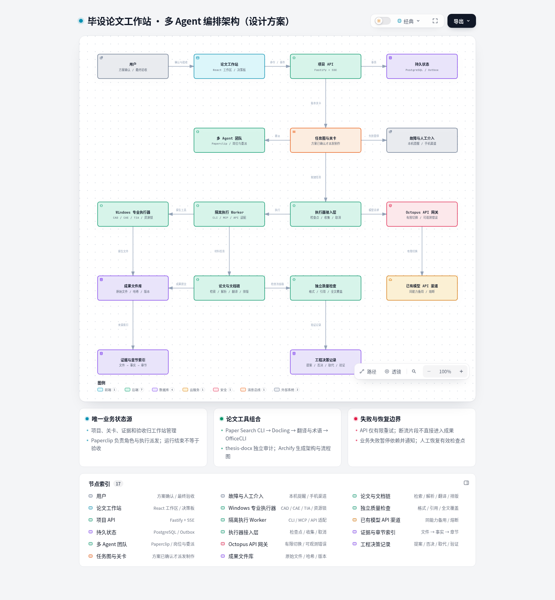
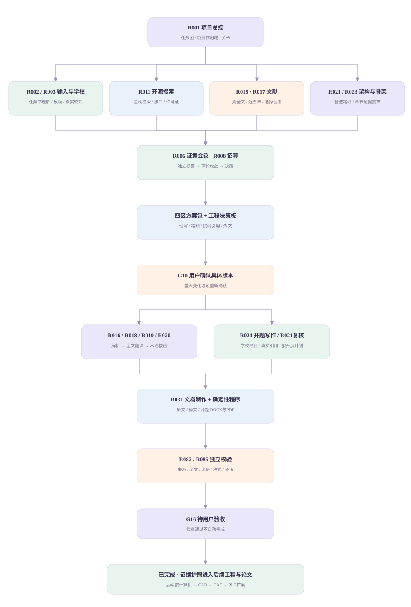
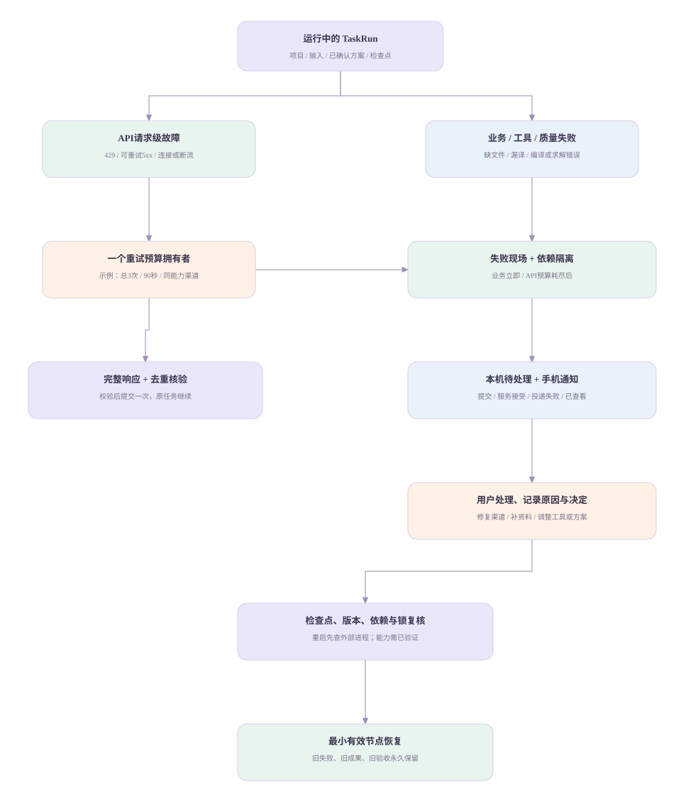

THESIS ATELIER / DESIGN REVIEW v2.0
真实交付：资源、设计、交互原型与图。示例执行与论文产物为模拟，专业工具待接入验证。
THESIS ATELIER：毕设论文工作站设计方案 v2.0
评审日期：2026-10-09。设计对象：个人、同一台电脑、多项目并行、通过已有 API 调用模型。交付状态：方案与可交互演示原型；不代表真实 Agent、论文检索、专业软件或手机通知已经接通。
本次建议把工作站设计成一个“研究与工程工作室”：长期岗位组成按项目变化的小队，任务图掌握执行，工程决策保存为什么，证据链把真实成果带进论文。先完成计算机开题与外文材料，再按计算机工程 → 二维 CAD → 三维 CAD → CAE → PLC 的顺序扩展；电气、电子、嵌入式、通信和跨专业路线保留完整配置。
1. 你可以直接评估的交付
| 交付 | 文件 | 可以评估什么 |
|---|
| 可点击原型 | 可点击原型.html | 11 页导航、多项目、四区确认、队伍讨论、任务图、决策板、证据、验收、资源、API 故障和人工恢复 |
| 交互架构图 | 架构图.html | 前端、状态库、调度、团队、执行器、文件、证据、模型网关、通知与关卡；Archify 实际生成 |
| 架构可编辑来源 | 架构图源.json、架构与恢复流程.mmd | 图源复核、后续改图；Mermaid 另覆盖请求恢复和任务生命周期 |
| 资源清单 | 资源复用与缺口清单.xlsx、资源全量索引.csv、重点开源复用表.csv | 884 条资源索引、35 项精选组合、当前版本、许可证线索、接口、用途与验证缺口 |
| 可继续开发的配置 | config/ | 96 岗位、215 节点、12 队伍、12 章节模板、69 成果规格、33 验收场景及适配器契约 |
| 方案与来源 | 本文、资源清单与使用说明.md、来源清单、research/ | 设计依据、选型取舍、成本假设、缺失信息、原始附件与公开文档证据 |
原型是无外部依赖的本地 HTML。所有执行、论文内容、检查通过、通知和成果文件状态均为模拟；下载预览时只给说明 TXT，不把假内容包装成 DOCX/PDF。架构图与方案是本次真实生成的设计文件。
2. 本次确实使用的八份资料
| 上传文件 | 内容版本与处理 | 直接用于本次设计 |
|---|
| ChatGPT-设计论文工作站[!]-20261009-1123.md | 对话导出逐轮回读；区分用户答复、旧助手结论和附件引用 | 已确认产品约束；补充 Codeg、Archify 和 Octopus；失败行为的后续修订 |
| 毕设论文工作站-全流程与团队设计-v1.0.md | 全文结构读取及配置提取 | 32 公共节点 + 183 专业节点；96 岗位；12 队伍与章节模板；69 成果；33 验收场景 |
| 同名 v1.0.docx | 解包 document.xml 核对共同主题、岗位与决策板 | 验证交付副本与 MD 主线；保留可编辑原件，不把它另计为一个新需求版本 |
| 同名 v1.0.pdf | pdftotext 提取并对照关键流程、岗位与决策板 | 作为固定阅读版；保留原件。本次未逐页重审上传 PDF 的版式 |
| Clippings-非GitHub资源索引-v0.2.md | 完整读取 632 行 C 编号来源索引与重复说明 | 补充技术资料、开发方法、研究方法和知识管理；保留 C 与 CL 两个编号空间 |
| 毕设论文工作站-设计讨论稿-v0.2(1).md | 文件头实际为 v0.5 | 继承四区方案、首版闭环和原 PI 插件候选；结合后续团队需求重新提出底座比较 |
| 毕业设计论文工作站-资源台账-v0.4 (1).md | 文件头实际为 v0.6 | 完整提取 252 个 GH 条目和 632 个 CL 条目；选择组合和记录来源状态 |
| 毕业设计论文工作站-资源台账-v0.1(1).md | 文件头实际为 v0.3 | 对照早期目标与历史待定项；不将已在后续确认的事项重新列为问题 |
八份附件均保留原字节并记录 SHA-256。版本以正文和文件头为依据，不只看文件名。重复的格式副本不增加资源数量；台账中的 884 是笔记条目数，不是 884 个不同软件。
当前上传的是整理后索引与设计文档，没有原始 Clippings ZIP、884 份独立笔记、原生工程、截图像素或 Octopus 独立帖子附件。因此可使用完整索引和摘要，不能宣称已重新实读每份原始笔记或取得全部媒体。论坛介绍、公开 README、源码接口、实机自测四种证据分开登记。
3. 必须落实的需求与设计边界
- 自用、同一电脑、尽可能推进多个项目；每个项目独立输入、任务、决策、证据、成果与验收。
- 从任务书开始，首版必须交学校模板开题报告，以及自行检索的近五年相关外文原文和全文译文。
- 外文逐篇独立交原文 DOCX/PDF、译文 DOCX/PDF；保留真实来源 PDF。篇数、年份口径、字数与版式按学校参数。
- 方案确认前展示任务理解与交付、技术路线与实施、开题提纲与引用、外文候选与理由；设计建议与事实缺项分列。
- 方案确认后自动推进；没有模板、真实全文或关键事实时不能假装完成对应交付。
- 业务执行或检查失败停止该节点与依赖，保存现场并通知；其他独立项目继续；共享能力故障仅阻塞依赖该能力的任务。
- 最新对话补充允许 API 请求故障有限重试／切换渠道。此例外不授权自动换工程方案、重跑失败检查或无限“继续”。
- 文件通过系统检查进入待用户验收，你确认具体版本后才算完成。
- 工程决策板首版必做；工作站开发与每个毕业项目各有空间，保存候选、否决、讨论、确认、实施与验证。
- 多专业覆盖可以完整设计，但专业软件、许可证、设备和真实 Agent 接口只有自测后才加入可派发能力。
费用、电脑配置和 API 是否存在不再作为设计前置问卷。模型走 API，已有渠道额度沿用；成本透明可选。具体机器与软件条件在实机接入时验证。
4. 有创意且能落地的六个产品机制
4.1 研究星图：岗位、任务、证据三层同图
一个节点可以从“谁在做”切到“做哪一步”，再切到“这一步支持论文哪一段”。图只显示登记的关系。角色的特点表现为工作原则：搜索员先核来源，架构师给备选与取舍，检查员先看证据，工程员必须交原生项目与日志。昵称可定制，职责与岗位 ID 固定。
首版先做任务依赖和岗位关联，后续增加完整图编辑。Codeg 的画布、会话分叉作为交互参考；Archify 实际承担架构、流程与状态图生成，Draw.io 补可编辑工程图。
4.2 有期限的证据会议室
触发条件是明确分歧、跨专业接口冲突、文献不支持关键论点或重大参数变更。R006 给出问题、范围、参加者、证据要求和终止条件；第一轮独立提交，第二轮处理分歧。默认最多两轮，建议总时限 10 分钟，均为可配置设计值。结果写成 DecisionProposal，包含支持证据、反对理由、建议、未决项和受影响任务。
讨论可以给出建议；只有你能确认主要路线、外文更换和范围变更。未决事实留待处理，不通过继续招募无限循环。借鉴 Rovai 的长期队员和共享对话；首版由工作站实现受控会议协议，不同时运行第二套业务调度器。
4.3 成果护照：文件携带自己的证据
每个 ArtifactManifest 保存原始来源、输入哈希、方案版本、生产 Run、工具版本、覆盖对象、独立 CheckRun、支持的 Evidence、对应章节和用户验收。点击论文结果图，可回到数据、处理脚本、工程版本和决定；点击参数变化，可看到需要重做的图表和章节。
首版护照包含文献源 PDF、原译文对象覆盖、术语与格式；后续扩展到代码、CAD、CAE、PLC、实物实验。云图、截图或 Agent 自评不能替代实际求解、编译与测试证据。
4.4 方案分叉：比较方向，执行唯一确认版本
允许架构师提出 A/B 草案，搜索员补开源对照、文献员补依据。草案分叉不占用 CAD/TIA，也不制作两套正式论文。确认后冻结一个 PlanVersion；被否决版本保留理由与重新考虑条件。重大改变创建新决定和 supersedes 关系，不能覆盖已验收历史。
4.5 能力面试：先完成一次小任务再上岗
招募一个新岗位时，运行输入齐备、正确输出、故障、暂停、收集与恢复的自测。按 capability_version 登记 passed / failed / unavailable / unknown。岗位目录不等于进程数量，安装不等于可派发。某执行器没有真正 resume 能力时登记明确限制，从最小有效节点重跑，而不是伪造“断点恢复”。
4.6 恢复控制台：保留现场，告诉你下一步
显示失败节点、原始错误、输入版本、已有文件、最后有效检查点、依赖影响、通知投递和恢复条件。你处理后填写原因，系统重新核对方案与依赖，只重做过期成果。运行中的外部进程需查询与接管；不可判断的任务进入待处理。
“缺口雷达”集中列出事实、全文、模板、能力与证据不足；可设计项交建议，真实信息等待你提供。它不会通过生成假文献或假测试数据填补缺口。
5. 推荐的开源组合与取舍
5.1 一个业务状态源，一套主派发路径
推荐先验证 Paperclip + 工作站领域插件/服务 + 本机执行器。Paperclip 的当前 README 公开描述长期角色、委派、审批、数据库唤醒队列、执行适配器、日志和插件；MIT 许可证可核对。本次已固定提交，但未实际启动 Paperclip，也未证明插件能完整覆盖以下约束。
工作站领域服务持有 Project、Requirement、PlanVersion、TaskDAG、Decision、Evidence、Artifact、CheckReport 与 Acceptance。Paperclip 提供角色和具体 Run 的派发、执行会话与日志。Paperclip issue 完成只投影为“执行结束”，不能越过工作站方案、系统检查与用户验收。
优先采用插件和外部适配器，不先大改底座。实现 PoC 时核对公开 SDK、事件和任务状态钩子。如果无法可靠禁用／拦截自主恢复或无法守住关卡，改用工作站自己的持久派发器；保留 Paperclip 角色目录和观察集成，PI 作为执行端。这个退路不改变需求或丢掉多 Agent 协作。
旧稿优先 PI-Desktop 插件，本次优先验证 Paperclip 控制面，是因为后续明确增加招募、长期队伍与自动委派需求。PI 仍保留为跨平台执行端与宿主备选。这是新的设计建议，不冒充你已经批准底座变更。
5.2 精选组合不是同时安装全部底座
| 模块 | 首选与组合 | 复用范围 | 必补能力 |
|---|
| 团队与派发 | Paperclip | 角色、任务所有者、唤醒、适配器、Run 日志 | 毕设关卡、失败即停、成果版本、验收投影 |
| 协作会议室 | Rovai 的角色／共享讨论方法 | 长期成员、讨论交接与使命分解 | 两轮会议协议、证据引用、结论转决策 |
| 交互空间 | 工作站 React 页面；Codeg／AionUi 对照 | 会话分叉、任务画布、文件预览；可依法复用适合组件 | 项目隔离、四区确认、成果验收与状态一致性 |
| 执行底座 | Pi / 现有 Codex或Claude CLI；GenericAgent/Hermes 可选 | 工具执行、Skill、模型调用、隔离会话 | 统一任务契约、取消、原生文件与恢复语义 |
| 工作站开发 | Trellis 主方法；Comet/Anneal/Maestro 对照 | 开发规格、上下文、实施检查与接手 | 同一开发任务一个主状态流程；与毕业项目运行分开 |
| 决策记忆 | DeepSeek Agent Notes、write-notes-like-deepseek 方法 | 提案、取舍、否决、实施与历史 | 事务持久化、相关决定加载、重要变更确认 |
| 研究契约 | Research Units/Harness 方法 | Unit、Run、证据与人工检查点 | 学校开题与全文翻译 Unit；许可证先核对 |
| 文献链 | Paper Search CLI → getbib | 元数据、来源检索、全文线索、引用归一 | 真全文获取、年限、相关性与论点支持核验 |
| 解析与翻译 | Docling → 术语/段落翻译；MinerU与PDFMathTranslate按需 | 结构解析、复杂页与PDF翻译辅助 | 原译文独立 DOCX/PDF、对象覆盖、图表公式与术语 |
| 文档链 | OfficeCLI → PDF渲染 → thesis-docx独立审计 | 模板、文件编辑、格式检查 | 学校参数、Word域、复杂长表、最终逐页复核 |
| 架构与图示 | Archify + Draw.io MCP | 类型JSON、离线交互图与可编辑图 | 图源绑定方案、图与论文保持版本一致 |
| API连续性 | 已有CC-Switch配置 + 一个Octopus网关 | 渠道别名、协议、多Key、故障切换与请求日志 | 共享重试上限、断流和错误屏蔽验证、工具幂等 |
| 专业能力 | CAD-Agent-Hub / TIA Openness / CODESYS | 本机软件桥、原生工程、编译/求解接口 | 软件许可证、版本、资源锁、专业检查和实机自测 |
| 工具接口 | FastMCP | 工具 Schema、结构化调用与结果 | 队列、方案关卡和验收仍归工作站服务 |
AxonHub 与 GPT-Load 是 Octopus 的替代对照，不叠加三个重试器。Rovai、Golutra、Edict、PI、AionUi、Codeg 也不是六个调度器一起跑。各候选按具体模块或比较任务使用。资料中 API 注册、账号管理、其他创作与生活资源保留原索引，但没有假装对本产品首版都有执行用途。
5.3 许可证和版本是复用条件
34 个 GitHub 重点项目有本次实际 ls-remote HEAD 和 README 获取记录，根路径 LICENSE 能取得的保留原文与提交。许可证未在常见位置取得时标“待核对”，不是断言仓库无许可证。Research Units、write-notes-like-deepseek、trellis-card、Maestro 等未取得根许可证的项目先作方法参考，不能默认复制代码。
PI 的 LGPL、PDFMathTranslate 的 AGPL、MinerU 的实际选定许可证及模型权重许可证，在组件拆分与分发前单独核对。MIT/Apache 也需保留声明。完整锁定清单见 research/repo-evidence.json，后续构建从确认版本取源码，更新需重新测试。
6. 多 Agent 编排的实际设计
6.1 四层：岗位、实例、运行时、工具
RoleDefinition 定义职责与输入输出；ProjectMember 是某岗位在某项目的一次实例；RuntimeBinding 选择模型 API 和 CLI/服务宿主；ToolCapability 定义工具版本、环境、权限与自测。一个 Runtime 可以承接多个岗位，但上下文按项目实例独立；一个成员换模型不改变其职责与历史。
首版实际启用来自 v1.0 的 19 个 TEAM-MVP 岗位，再增加 R006 决策、R007 影响、R008 招募、R013 模型评测、R082 来源审查、R094 通知、R095 环境等必要支持。总约 26 个可启用岗位，非 26 个同时推理的进程；建议初始 4–8 个 API 推理槽，按实机和渠道验证调整。文件检查、调度、格式和队列不是都让大模型处理。
6.2 角色性格转成可验收的工作原则
| 岗位 | 创意定位 | 行为约束 | 必须交出的结构化结果 |
|---|
| R001 项目总控 | 指挥台 | 只依据持久状态、能力与关卡派发 | TaskGraph、进度、问题与阶段总结 |
| R006 决策主持 | 议事官 | 两轮收敛，不越权替你确认 | DecisionProposal、备选与异议 |
| R008 招募员 | 组队官 | 先匹配已验证能力，再提出缺口 | TeamManifest、能力面试结果 |
| R011 GitHub搜索员 | 探路者 | 主动检索有停止条件，核对版本与授权 | RepoCandidate、接口、限制、验证计划 |
| R013 API评测员 | 守桥者 | 先实测协议与质量，报告未知 | ModelCapabilityMatrix、失败样例 |
| R015 文献员 | 溯源者 | 元数据与真全文分开，不能编DOI | LiteratureRecord、检索日志 |
| R018 翻译员 | 译桥 | 全文对象覆盖，疑义显式记录 | TranslationSegments、术语与疑义 |
| R021 架构师 | 筑构者 | 给备选、否决理由、依赖与验证 | PlanProposal、接口与路线 |
| R023 章节设计员 | 论证织者 | 每章问题对应证据与真实来源 | ChapterContract、EvidenceNeeds |
| R031 文档制作员 | 排版工坊 | 按学校模板，不能独立自验收 | DOCX/PDF、对象与导出清单 |
| R082/R085 独立检查 | 验真者 | 不审自己的稿；失败明确定位 | CheckReport、阻断项与页/对象位置 |
| R094 通知维护 | 值守台 | 投递与已读分开；保留失败 | NotificationDelivery、人工工单 |
96 个岗位的原始详细职责、工具、输入输出、合作方与启用条件已全部提取到 config/agent-roles.json；13 条专业分支与12套队伍保留。首版的公共团队不承担尚未验证的专业软件执行。
6.3 确定性调度与智能计划分开
Agent 提议任务图，Schema 校验、环检测、所需能力和范围审查后才入库。调度器检查五件事：已确认版本有效、输入完整、依赖通过、能力就绪、资源可用。只有通过关卡的任务进入领取；排队原因显示为等待方案／资料／能力／许可证／桌面／上游成果。
共享优先级按用户优先级、期限与等待时间排列，采用项目公平轮转，避免大项目占尽执行器。限速按渠道与能力，不按“项目总数越多越好”盲目全并发。专业 GUI、同一工程、同一桌面、许可证席位和输出路径带互斥锁；读冻结版本可并行。
6.4 两种循环必须分开
受控研究循环：缺依据 → 有目标检索 → 返回证据；有分歧 → 两轮会议 → 提案／待处理。确认范围内可自动安排。
业务失败循环：工具错误／缺文件／检查未通过 → 保存检查点 → 停该节点与依赖 → 通知 → 人工处理 → 核对条件 → 恢复。禁止把“讨论新方案”变成擅自替你选路线并无限重做。
7. 技术架构与唯一状态源
7.1 建议技术栈
| 层 | 建议 | 原因与边界 |
|---|
| 前端 | React + TypeScript + Vite；React Flow用于任务图；PDF.js用于最终PDF预览 | 与任务、会话、证据的结构化交互；首版原型本身是零依赖HTML |
| 应用 API | Node.js LTS + Fastify + Zod | JSON契约、事务命令、SSE事件；优先按Paperclip固定版本兼容其开发工具链 |
| 团队控制 | Paperclip 插件/适配集成 | 复用角色和执行管理，不把其通用任务完成当项目验收 |
| 持久化 | PostgreSQL；工作站独立schema；FS内容寻址文件库 | 同一业务命令、事件和Outbox事务提交；不直接改第三方私有数据库 |
| 派发 | 数据库TaskRun队列 + Outbox；独立调度循环 | 首版少一个Redis服务；插件派发映射有幂等键与run_id |
| 文献/解析执行 | Python Worker + Docling + 检索CLI | 文档工具、来源与对象级检查适合Python；由接入协议解耦 |
| 工程执行 | Windows 原生 Worker + MCP/CLI/软件API | CAD、TIA、Office依赖实际Windows应用；WSL只承载可兼容服务 |
| 模型网关 | Octopus；现有渠道；密钥OS钥匙串/服务端凭据引用 | 一份请求上限与故障可见性；浏览器和产物不含API凭据 |
| 文档渲染 | OfficeCLI + 可配置Word/LibreOffice PDF后端 | Linux PoC可用LibreOffice；最终按学校复杂模板选择真实后端 |
| 通知 | 本机工单/系统提示 + 一个手机渠道适配器 | 不一次实现所有平台；未配置显示未就绪；不提前发消息 |
| 桌面壳 | 首版本机浏览器；必要时Tauri或PI插件 | 避免先造桌面壳；系统通知可由本机Worker提供 |
Node版本、包管理器、Python和软件版本以选定组件提交的manifest为准，在实施锁定；本设计没有把“最新版”当可复现版本。首版无需向量数据库、大型分布式集群或同时启动多个工作台。
7.2 文件与状态如何一致
数据库保存项目、方案、任务、运行、对象清单、检查报告、决定和验收。文件在 project/{id}/runs/{run_id}/staging 写入；结构检查与哈希通过后进入 objects/{sha256}，manifest 指向不可变对象。原始PDF、工程文件和日志保留，编辑件另存版本。
文件系统提交与数据库不能假装一个事务。先原子文件写入，再在DB事务注册Artifact、Check状态和Outbox事件；崩溃产生的未登记对象作为孤儿延后清理，不误记成功。正式成果不被临时文件覆盖。备份同时保存数据库与对象库，归档用清单哈希核对。
7.3 事件、权限与项目隔离
前端发命令，服务端事务验证关卡并写事件；SSE只展示事件，不作为调度事实源。聊天提出操作意图后进入同一CommandHandler；重要确认通过显式操作绑定版本。任何前端拖动或第三方任务完成事件都不能绕过关卡。
Worker凭任务令牌只读授权项目输入、相关有效决策与工具；写入自己的Run staging目录。共享公开资料可去重，但项目私有工程和结论隔离。来源文本和README是数据，不自动转成执行指令。开发Agent修改工作站代码在独立开发空间，不能以处理毕业项目失败为由无限改系统。
8. 数据契约与接口接缝
8.1 关键实体关系
Project → Requirement → PlanVersion → TaskDAG → TaskRun → Artifact → CheckRun → Evidence → ChapterClaim → Acceptance。Decision可关联要求、方案、任务、文件、证据和章节；Capability关联Role与RuntimeBinding；Notification由FailureEvent生成。
每个实体都带project_id（公开Resource例外）、version、created_at及来源。方案审批保存plan_hash；Acceptance保存artifact_manifest_hash与check_report_ids。部分成果验收可以记录，但必交清单全满足并最终确认后，项目才completed。
8.2 统一任务契约（本工作站提出）
{
"task_id": "P001:G12",
"project_id": "P001",
"node_id": "G12",
"plan_version": 2,
"role_id": "R018",
"dependency_task_ids": ["P001:G11"],
"input_manifest_ref": "artifact://source-manifest",
"output_specs": ["D005", "D006", "D013"],
"capability_version": "translation.pipeline@validated-version",
"resource_locks": ["document:P001:paper-A:translation"],
"idempotency_key": "sha256(project,node,plan,input-hashes,capability)",
"checkpoint_ref": null,
"business_retry_policy": "human_resume_only",
"api_retry_policy_ref": "same-capability-bounded-v1"
}
以下是工作站适配器的提议接口，不声称第三方仓库原生就有同名方法：prepare、submit、poll、cancel、collect、check、resume、selftest。每种工具声明支持哪些方法。CLI封装返回真实退出码、文件清单、日志、checkpoint与resume_supported；不以进程PID或生成文件名判成功。
- Paperclip接缝：project/task/run三组ID映射；以官方插件/适配器入口派发；重复唤醒只创建一个active TaskRun；结果回调必须包含输出清单、运行状态与错误。
- 文献接缝：Paper Search CLI JSON → LiteratureRecord；getbib输出 → 引用归一；真正全文取得后存SourceArtifact并允许G11。
- 文档接缝：Docling结构 → ObjectLedger；TranslationSegments → OfficeCLI输入；导出 → thesis-docx审计 + 最终PDF逐页检查。
- 专业接缝：CAD/TIA/CODESYS通过Windows Worker领取任务，带软件版本与会话锁；native工程 + 实际操作日志 + check报告提交。
- 网关接缝：单一模型组别名 → 同能力备用渠道；request_id/attempt_id绑定TaskRun；完整响应检查后才进入工具/成果提交。
8.3 应用命令与结果（拟实现）
| 命令 | 原子检查 | 结果 |
|---|
| POST /projects | 项目类型、输入登记、配置冲突 | 项目、输入与缺口 |
| POST /plans/{version}/approve | 当前版本哈希、四区、全文候选、必填事实 | PlanApproved、可派发任务 |
| POST /tasks/{id}/dispatch | 依赖、能力、方案、锁、active run唯一约束 | TaskRun / DispatchRequested |
| POST /runs/{id}/result | Worker身份、输入/版本、文件哈希、状态码 | 执行结束、待检查或失败工单 |
| POST /tasks/{id}/resume | 人工处理事件、检查点、方案、依赖、锁 | 新attempt，旧失败不可覆盖 |
| POST /decisions/propose | 证据与影响范围 | 提案；重大变更等待确认 |
| POST /acceptances | 冻结manifest、必交清单、检查结果、版本 | 用户验收或修改任务 |
| GET /events?project_id=... | 作用域与最后event_seq | 可续读SSE事件流 |
实际API路径在开发时锁定；以上属于本方案自有API设计，不是现成仓库已测试接口。
9. API重试、任务恢复与失败隔离
9.1 请求级故障转移（最新用户补充）
设计默认最大3次总请求（初次 + 最多2次重试/切换）、总窗口90秒、连接超时10秒；每次剩余时间从总窗口扣除，具体数字可配置。一个组件拥有重试预算，SDK、网关与业务调度不得各自叠加。尊重Retry-After，指数退避加随机抖动；超过窗口立即返回可见失败。
| 失败类别 | 自动行为 | 上限后的行为 |
|---|
| 429、可重试5xx、连接失败，且无已提交副作用 | 同能力渠道有限切换/重试 | 失败工单、保存检查点、通知 |
| 401/403、错误端点/协议、Schema不兼容 | 标能力配置故障，不重复无效请求；可选另一个已验证绑定 | 人工配置处理 |
| 首Token前超时 | 可有限重发 | 同上 |
| 流式响应中途断开 | 暂存片段不可提交；没有工具副作用且策略允许时重请求完整响应 | 保存检查点，显式报告断流 |
| 工具调用已执行、外部副作用状态不确定 | 不自动重放工具；读取去重记录与实际工具状态 | 状态无法核实则人工处理 |
| 全渠道失效或能力变化 | 熔断相关能力；只暂停依赖任务 | 本机工单 + 手机通知；人工恢复 |
模型替换必须有相同能力画像与已验证任务范围；不能只因为返回HTTP200就宣布能力等价。方案中的模型能力包括工具调用、结构化输出、长文覆盖、术语、代码、延迟和故障表现。网关自动切换Key/渠道与修改主工程方案是两类权限。
Octopus当前README声明自动故障转移和上游错误屏蔽；旧对话报告文章正文曾写“手动切换”。原帖子本轮没有上传，因此精确差异待核。采用前必测错误屏蔽是否返回伪成功、空内容或无限等待；工作站需保留真实失败状态、request_id和耗时。无法验证此行为时用AxonHub/GPT-Load同任务对照或先使用现有渠道受控调用。
9.2 任务领取、锁与检查点
数据库事务领取并建立Run、lease和Outbox；publisher发DispatchRequested。分发至少一次，应用提交通过idempotency_key、active-run唯一约束、callback event_id去重。不能保证所有外部工具“恰好执行一次”；非幂等外部操作以operation ledger查询或转人工。
资源锁含owner、lease_until、heartbeat与fencing_token。到期不直接允许另一个Worker改同一工程：先核对外部进程、释放或标人工接管；旧Worker提交必须带有效token与版本。项目切换和取消也不能只改前端状态。
检查点分段落批次、章节、原生工程保存点或求解阶段；只有适配器真正支持的粒度才可恢复。取消需要取消确认或无法安全取消的可见状态，之后才释放独占资源。重启扫描running：能查询进程则重新观察，不可核对则待人工处理，不自动成功。
9.3 通知也有自己的失败状态
FailureEvent与NotificationOutbox同事务保存。本机工单始终可查；手机选一个渠道，内容含项目、失败步骤、现场与恢复条件，不含凭据。投递可有限重发，但业务任务仍等待人工。status区分queued/submitted/service_accepted/delivery_failed/user_viewed；没有渠道回执时不能声称已送达或已读。
10. 页面、操作流程和首版范围
11个页面：项目总览、项目工作区、方案确认、Agent团队、任务编排、工程决策板、证据与章节、成果与验收、开源资源库、故障与恢复、系统架构。
主工作区沿用左项目资料、中团队对话与任务、右成果预览。桌面窄屏折叠预览，不让核心按钮消失。待处理中心优先展示需要你做的决定，而不是每次程序读写都请求批准。
首版闭环为G01–G16：输入留存与学校配置 → 需求与交付合同 → 能力检查与开源/文献搜索 → 四区方案 → G10确认 → 原文/翻译/开题制作 → 独立检查 → G16用户验收。全文候选与合法可获得性前置，正式翻译后置。学校对开题双格式的要求优先，通用建议为DOCX/PDF。
首版必做：多项目、岗位/队伍、方案关卡、自动任务依赖、来源和全文对象覆盖、学校模板、四文件外文交付、独立检查、工程决策板、有限API切换、失败保存、通知、人工恢复、最终验收。
后续工程/论文/PPT的专业节点完整保留，但首版不同时开发13条专业执行链。首版只显示候选能力，不伪装Windows CAD/TIA在云Linux中已工作。第二阶段计算机工程真实构建和测试；CAD/CAE/PLC按既定顺序加入并过各自原生工程验证。
11. 实施路径与验证标准
工期为设计估算，不是已完成进度或保证。假设1名熟悉全栈与Python的开发者，加可用开发Agent；真实模板与API可用；无需先定制专业软件。
| 阶段 | 估算工作量 | 可审查产物与退出条件 |
|---|
| A 关键接缝PoC | 5–8人日 | Paperclip插件派发与关卡；两个项目；真文件回收；API故障注入；决定持久化 |
| B 前期材料闭环 | 10–15人日 | 真实任务书与学校模板；文献真全文；原译文四文件与开题；真实覆盖/版式报告 |
| C 稳定性与体验 | 8–12人日 | 重启、锁、幂等、取消、通知可达、验收、备份与版本迁移；33场景按阶段覆盖 |
| D 实机试用与修订 | 5–8人日 | 多项目真实样例、错误清单、性能与缺陷修复、用户验收 |
首版约28–43人日，通常6–9周量级，取决于模板、工具接口和反馈；开发Agent并不按数量线性压缩工期。CAD、CAE、TIA及跨专业阶段单独估算，不计入首版。
验收分三层：当前交互原型浏览器验证；组件接缝PoC；真实项目端到端。原型的“通过”不能代替软件或论文结果。配置已保留v1.0的33个验收场景，再追加：API429/断流/全失败、错误屏蔽、工具副作用去重、双轮会议、方案分叉和证据过期。
最关键的实机验证：
- 未确认方案，无法开始正式翻译或开题制作；需要真全文的节点不会接受摘要。
- 两个项目A失败后依赖停止，B继续；共享模型能力故障不暂停独立CAD/其他可用能力。
- 停止/重启后不误记成功；已验收有效成果不盲目重做；API断流不混入译文。
- 有图表公式附录的论文全文对象覆盖；学校模板DOCX和最终PDF逐页一致。
- 作者与独立检查分开；系统检查通过后仍待用户验收；验收绑定manifest。
- 新Agent接手读取有效决定、否决理由与版本；重大变更标过期并重新确认。
- 手机渠道真实收件验证，不能以服务HTTP200代替收到提醒；备份恢复不丢方案和验收。
12. 成本说明与模型选择
沿用已有CC-Switch/中转额度。用户没有要求硬预算阈值，首版只记录消耗；自动预算暂停是可选项。网关开源不等于API免费，专业CAD/CAE/TIA/Office的软件许可与现有安装分别统计。
项目模型费用公式：Σ(输入Token/1,000,000 × 输入单价 + 输出Token/1,000,000 × 输出单价)，再加检索/解析外部服务费用。缓存、不同模型、重试和渠道折扣单独计入。原型不连接计费服务，没有读取真实余额。
仅作估算算例：每项目首版总输入0.6M、总输出0.15M Token；假设输入20元/M、输出80元/M，则模型费用24元；加20%重试与返工为约28.8元。低/高用量按0.3M/0.075M至1.2M/0.3M同价约12–48元，含20%余量约14.4–57.6元。数字是人为情景，不是某模型报价；真实长论文、OCR和多轮修改可超此范围，输入实际渠道价格后重算。
一次架构会议与不确定研究可能高成本，调度不把全部资料塞进每个Agent；按任务检索、相关决策加载与交接摘要降低重复上下文。确定性解析、哈希、文件检查、格式与队列不使用大模型；翻译、架构和审查采用各自评测最适合的能力档。
模型推荐按同样本评测，不凭名称宣传：工具调用是否正确、JSON是否符合契约、全文是否漏译、术语是否稳定、引用是否可核验、错误是否可定位、时延与实际费用。实现时选“架构/审查强推理档、翻译长文档、工程工具档、常规提取经济档”，记录具体model_id和provider_alias，不在设计阶段假装已选出普遍最优API。
13. 剩余待确认与实施缺口
现在无需你补充材料也能评估本方案和原型。以下在进入真实交付或接入前落实：
| 项目 | 影响 | 设计默认 / 等待动作 |
|---|
| Paperclip控制面 vs PI宿主 | 开发成本和接缝可行性 | 推荐先PoC Paperclip；你评估后确认，接缝验证失败走已描述退路 |
| 一个真实计算机任务书与学校模板 | 首版内容、最终排版与验收 | 实现前提供；不编造学校、教师和指标 |
| 外文篇数、近五年口径、格式 | 文献筛选、交付数量 | 滚动5年是建议；学校参数优先，日期精度不足需核对 |
| 实际Agent入口与软件版本/许可 | 专业工具是否可运行 | 单任务自测；不用在设计前重复问硬件与费用 |
| Octopus所选版本行为 | 有限切换、断流与错误可见性 | 按故障注入验证；原帖子全文待补，对话已足够纳入资源方向 |
| 手机渠道与接收配置 | 真实可达通知 | 默认本机工单+一个手机渠道；实施时安全配置，不在聊天要密钥 |
| 原始Clippings ZIP与截图 | 再审原文、图片样式及完整媒体 | 当前完整继承索引；有原包后补原文与媒体，不阻塞方案评审 |
| 部分资源的许可证与插件API | 源码复制、分发与稳定接入 | 先参考方法，官方许可证/SDK核对后再编码 |
| 分项验收与修改意见 | 交付颗粒度 | 原型按本批清单验收、修改建修订任务；可支持逐文件验收但项目需全清单完成 |
你评估时主要判断：页面是否符合工作习惯、团队协作是否清楚、失败处理是否安心、首版边界是否合适、开源组合是否值得进入PoC。所有已确认的要求会继续沿用，待确认只影响新提出的实现取舍。
附图：系统与协作设计

系统架构：Archify实际生成；设计拓扑，不代表运行事实。
多Agent岗位协作：搜索、方案、讨论、确认、交接、独立检查与用户验收。
请求级故障转移与人工任务恢复的边界。